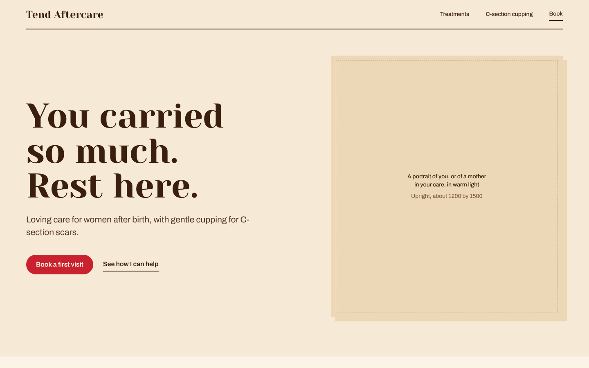
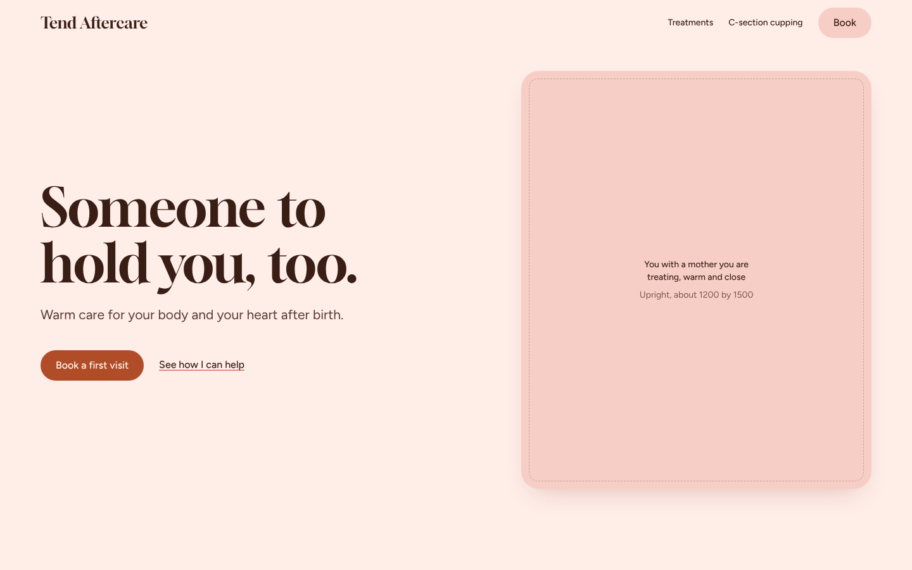
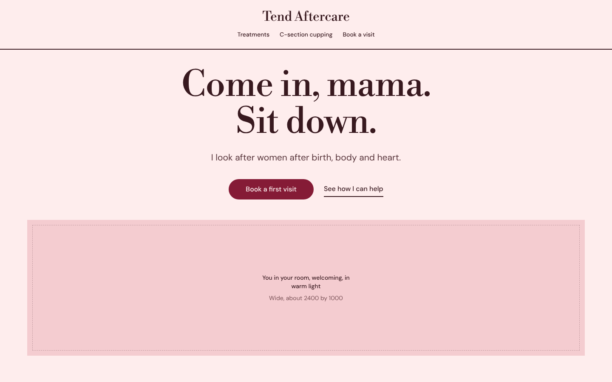

Three warm versions to choose from
Same words, three different looks, all in warm colours and written in your voice. Every picture is an empty spot marked with what belongs there, so you can see the shape of the page before you take any photographs.
-

Version 1: Golden hour
Cream and honey, deep brown ink, a bold serif. Steady and grown up.
-

Version 2: Soft hands
Peach and terracotta, everything rounded and close, like cupped hands.
-

Version 3: Come in, mama
Blush and deep rose, centred like a greeting at the door.